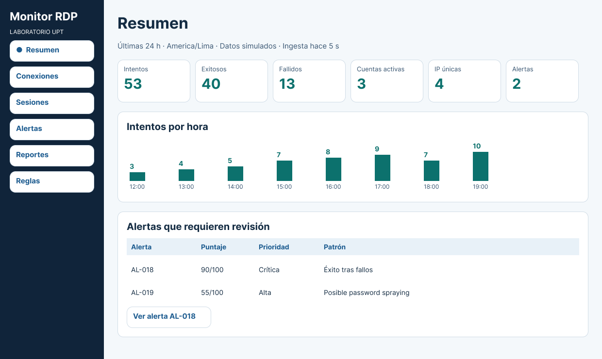
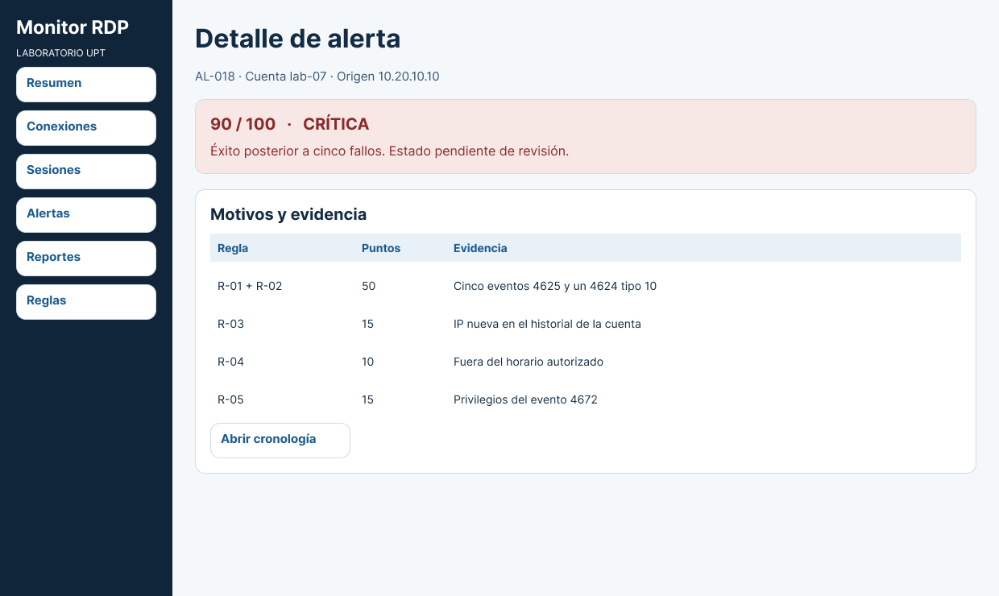
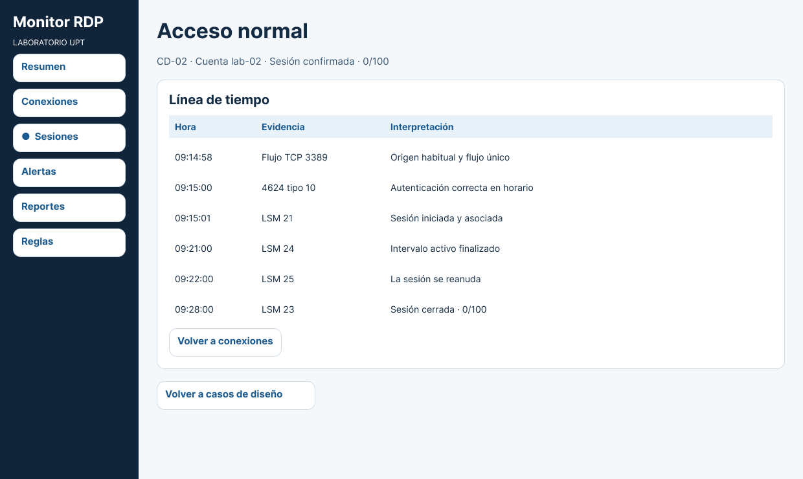
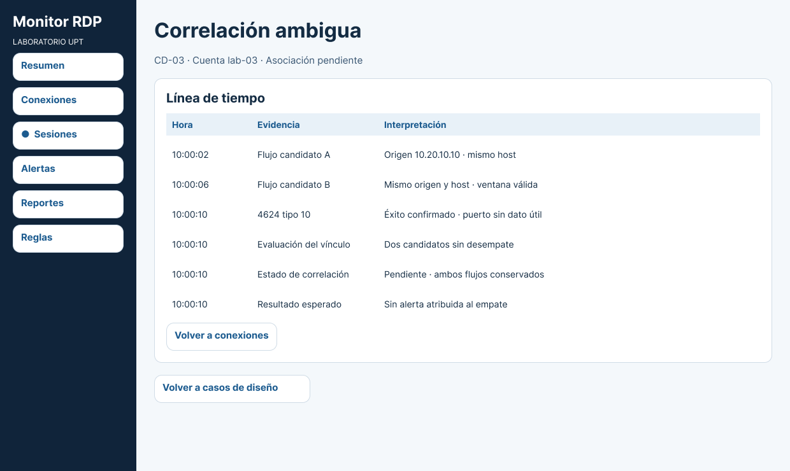

Recolectar
Obtener eventos de Windows y metadatos de los flujos RDP.
Proyecto de diseño · Unidad II
Diseñamos una forma de unir los registros de Windows y el tráfico de red para reconstruir sesiones de Escritorio Remoto y explicar por qué una conexión merece revisión.
Sistemas Operativos I · Universidad Privada de Tacna

01 / El problema
Para investigar un acceso remoto hay que contrastar lo que registró Windows con lo que se observó en la red. El diseño reúne ambos datos en una cronología y distingue entre sesiones confirmadas y asociaciones que requieren revisión.
Obtener eventos de Windows y metadatos de los flujos RDP.
Evaluar coincidencias por origen, destino y ventana temporal.
Mostrar la cronología y las reglas que justifican cada alerta.
02 / Arquitectura
El laboratorio propuesto separa el cliente, el servidor Windows, el analizador y el firewall. El diagrama muestra el recorrido de los datos desde la conexión hasta el panel de revisión.

03 / Prototipo en Figma
Explora tres situaciones simuladas y observa qué información recibe el analista para decidir si debe investigar, confirmar una sesión o dejar la correlación pendiente.
CD-01 · AL-018
90/100
El panel muestra las reglas activadas, su aporte al puntaje y un enlace a la cronología para revisar la evidencia.

CD-02 · Sesión confirmada
0/100
Un único flujo coincide con el inicio de sesión remoto de Windows. La cronología conserva las transiciones de la sesión.

CD-03 · Asociación pendiente
Dos flujos son compatibles con el mismo inicio de sesión. El panel conserva el caso pendiente de revisión y evita atribuir una alerta a un flujo específico.

04 / Entrega académica
Consulta la versión V8 del proyecto, que incluye los requerimientos, el diseño de la solución, el plan de pruebas y la bibliografía.